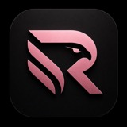
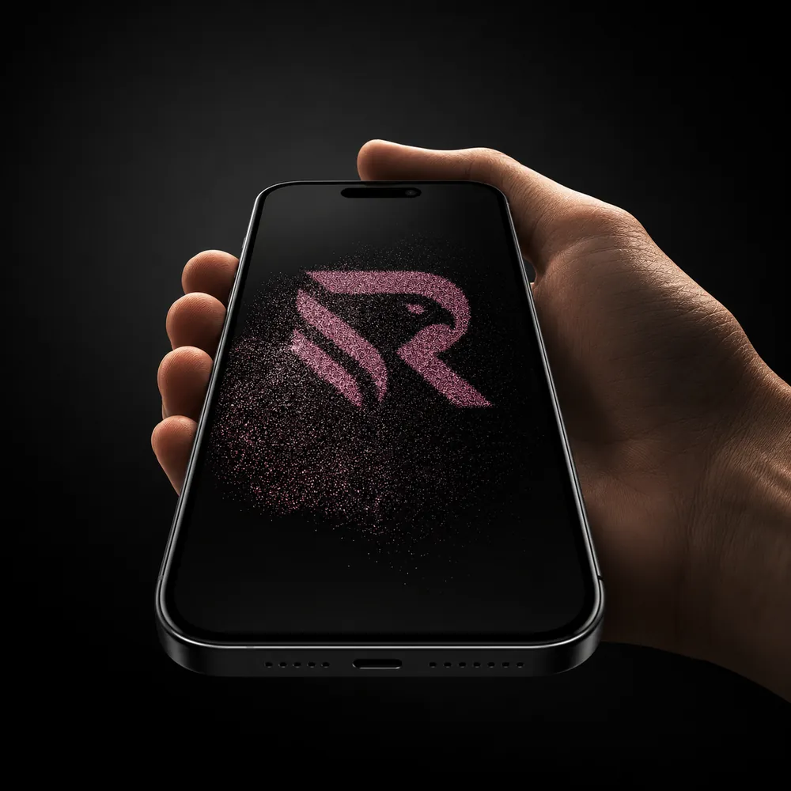
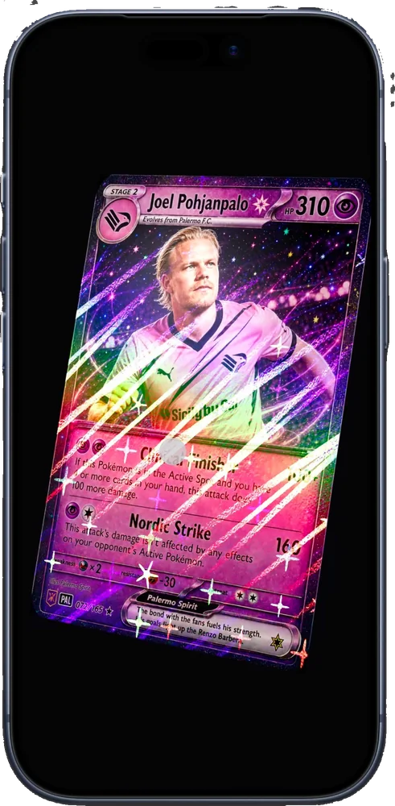

RosaneroNotizie senza doppioni, la community dei gruppi rosanero, classifica, calendario, rosa e statistiche. Un'unica casa digitale per chi vive il Palermo ogni giorno.

Le prime due sono già in costruzione. Le altre arrivano una alla volta, senza promesse che non possiamo mantenere.
Una notizia, una scheda che si aggiorna a ogni sviluppo. Niente doppioni.
Gruppi verificati, pronostici, pagelle della tifoseria e matchday evento per evento.
Personalizzabile e ordinabile per i criteri che contano per te.
Prossime partite, orari e risultati in un colpo d'occhio.
Ogni giocatore con la sua scheda e le statistiche della stagione.
I numeri della squadra e dei singoli, stagione per stagione.
Trattative, ufficialità e voci, distinte per affidabilità.
Tag geolocalizzati, presenze allo stadio e realtà aumentata. In sviluppo.
Un acquisto, un rinnovo: ti arriva decine di volte con titoli diversi. Rosanero riconosce la storia e la tiene in una sola scheda che si aggiorna.
Una sola scheda, che apre sempre con l'ultima novità: dalla trattativa alle visite mediche fino all'ufficialità. Riassunto fedele in italiano, solo con i fatti riportati.
Classifica, calendario, rosa e statistiche seguono il Palermo dovunque giochi. Niente da riconfigurare a fine stagione.
Personalizzabile e ordinabile. Scegli i criteri che contano per te e salva la vista: la ritrovi a ogni giornata.
Prossime partite, orari e risultati, aggiornati a fine gara. La forma recente a colpo d'occhio.
Ogni giocatore con la sua scheda e le statistiche della stagione.
I numeri della squadra e dei singoli, stagione per stagione. Confronta con la scorsa e con gli avversari.
Difensore · contratto quadriennale
Centrocampista · trattativa avviata
Attaccante · interesse da confermare
Trattative, ufficialità e voci, distinte per affidabilità. Le stesse schede vive del Live News Feed, filtrate sul mercato.
Non un altro social. Un hub verticale dedicato solo al Palermo, dove gruppi e fan club diventano protagonisti: pronostici, pagelle, matchday e classifiche in un unico posto.
Oggi la tifoseria è sparsa tra piattaforme generaliste, ognuna con le sue regole e il suo pubblico:
Le conversazioni si disperdono. Rosanero le riunisce in un posto solo, con strumenti che i social generalisti non hanno.
Ogni gruppo o fan club esistente può avere una presenza verificata: basta che l'admin reale del gruppo si verifichi dentro Rosanero. Logo, feed, moderatori, statistiche e classifiche restano suoi.
Prima di ogni partita puoi prevedere risultato, primo marcatore e MVP. I punti alimentano tre classifiche parallele.
Indovina il punteggio finale del match.
Scegli chi segnerà per primo.
Vota chi sarà il migliore in campo.
I punti contano nella classifica individuale, in quella interna al gruppo e nella generale tra gruppi, ponderata: non vincono solo i gruppi più grandi, ma anche i più attivi e precisi.
Voti a giocatori, allenatore e squadra, più sondaggi su mercato e decisioni chiave. Vedi il dato di tutta la community o filtri per il tuo gruppo.
Una chat unica diventa caotica. Il matchday Rosanero apre un thread automatico per ogni evento: ogni momento ha il suo spazio commentabile.
La rete che sblocca il match
Cambia l'inerzia della gara
Il brivido che accende la chat
Il battito emotivo della community durante e dopo la partita, generale o filtrato per singolo gruppo.
Badge legati a presenze allo stadio, trasferte, abbonamenti, pronostici e attività. Ogni collezionabile dà XP e conta nelle classifiche.

Livello, XP, collezionabili, gruppo di appartenenza, ranking, pronostici corretti e presenze: ogni azione costruisce la tua storia da tifoso.
Un secondo canale verticale, dedicato solo al Palermo, accanto a quello che già usi. Con strumenti che Facebook non offre, e la tua moderazione intatta.
Un presidio pensato solo per il Palermo, accanto ai social che già usi.
La presenza ufficiale del tuo gruppo, riconoscibile e autorevole.
I tuoi iscritti in un ambiente focalizzato, senza rumore generalista.
Pronostici, pagelle e matchday come strumenti per i tuoi iscritti.
Una competizione interna che tiene viva la community.
Pieno controllo su admin, moderatori e regole del gruppo.
Strumenti freschi per far partecipare gli iscritti ogni settimana.
Porta il tuo gruppo nella classifica generale tra tutti i fan club.
Rosanero è un progetto indipendente: le funzioni arrivano una alla volta e le raccontiamo qui man mano che sono pronte.